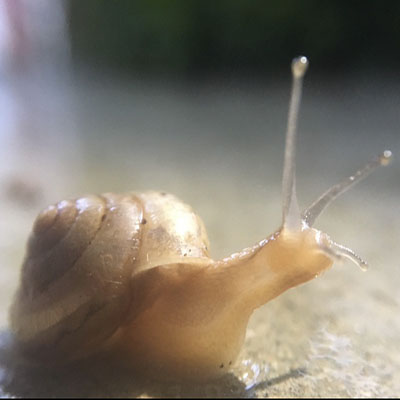

Syrphidae (flower flies)
This group of important pollinators is poorly treated in the Encyclopedia of Life despite the fact that flower flies play a crucial ecological and economic role as bio-control agents of plant pests, re-cyclers of dead plant and animal matter, pests of some ornamental plants, and pollinators. Syrphids have also been used as bio-indicators of environmental health and change and as an indicator group to demonstrate the effects of climate change on pollinators.


